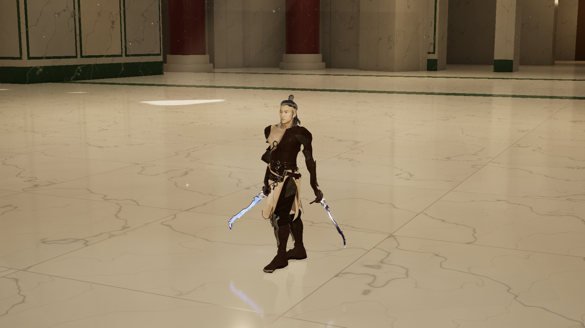
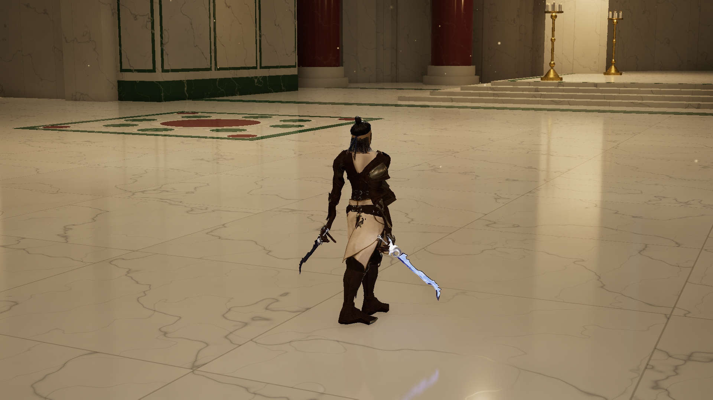

← Lightblade 独立评审 · 五角色整合同一套免费资源 · 两种轻装穿法
保留原来的脸、发型、蓝色晶刃双剑与原招式。先比较穿搭轮廓，两套都还没有定型。
A · 原披领与长下摆
接近作者原服装。已完成完整动态试穿，但披布和长前裙有明显穿插，尚未修好。


B · 去披领与短下摆
移除肩颈披布，将白色布摆缩至膝部附近；保留深色皮革与原单肩轻甲。已补齐完整动态试穿；肩甲在大转身中的抬起幅度、配件和局部间距仍需评审，尚未定型。


两边均为 UE 实拍。A 的黑色破口属于穿插问题；B 不是完成版，肩甲、腰部配件与动态间距仍需要检查。另一次逐点撑开披布的试验损坏了褶皱，已淘汰，不作为造型方向。
A · 原披领版本的完整动态试穿
10.4 秒静音服装检查。可查看侧闪、反击、旋身和空中斩；保留可见穿插，便于评审。
查看动作跳转与问题截图 →B · 去披领短摆版本完整动态试穿
10.4 秒静音 UE 服装检查，保留原来的动作。肩甲抬起和局部配件仍待评审。
查看 B 版本的动作跳转与截图 →资源与改动
服装：Assassin Character Model — glenfernandes66，CC BY 4.0。A：去除作者头部、兜帽，骨架与穿戴适配。B：额外去披领、缩短布摆、适配甲片绑定。保留原 UV 与 PBR 贴图。
蓝剑：The Crystal Elemental Sword — nodgerty，CC BY 4.0。原角色：Epic Games Paragon Kwang。